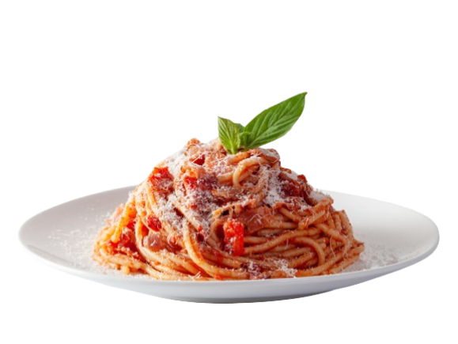

Introduction
With crispy pork, a velvety sauce, and a punch of black pepper, spaghetti carbonara delivers soothing comfort and big flavor in under 30 minutes. It’s a signature Roman dish that shines by staying simple. Egg yolks provide the sauce’s luscious texture and golden hue; they’re cooked gently as you toss them with the hot pasta, so timing and following the order of operations is key.

Ingredients
- 400g (14oz) spaghetti
- 150g (5 oz) pancetta or guanciale, diced
- 2 large eggs
- 2 egg yolks
- 1 cup freshly grated Pecorino Romano cheese (or Parmesan)
- 2 cloves garlic (optional)
- Black pepper
- Salt (for pasta water)
Instructions
- Heat 6 qt. water in a large pot over high heat. When steaming, add salt and cover to bring to a boil faster.
- Slice guanciale or pancetta into strips. Finely grate cheese and set aside a quarter for topping.
- Whisk eggs and yolks in a bowl, stir in most of the cheese, and add black pepper.
- Heat olive oil in a heavy pot. Cook pork until crisp (7–10 minutes).
- Remove pork and reserve 3 Tbsp. of rendered fat in the pot.
- Cook spaghetti in salted boiling water until 2 minutes shy of al dente. Reserve pasta water.
- Transfer pasta to pot with pork fat and cook 2 more minutes, adding some reserved water.
- Remove from heat. Slowly stir egg mixture into pasta, adding pasta water gradually until glossy and creamy.
- Mix in pork, divide into bowls, and top with pepper and reserved cheese.
Congrats eat your pasta
Website Source
bonappetit.com/recipe/simple-spaghetti-carbonara
End
Back to home